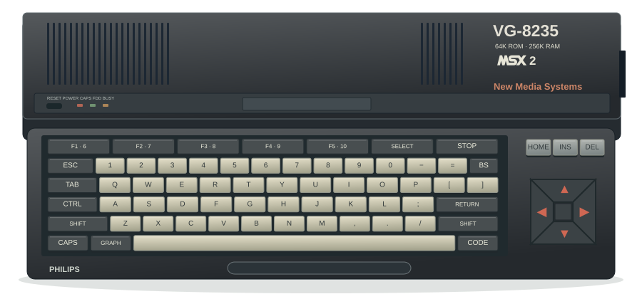
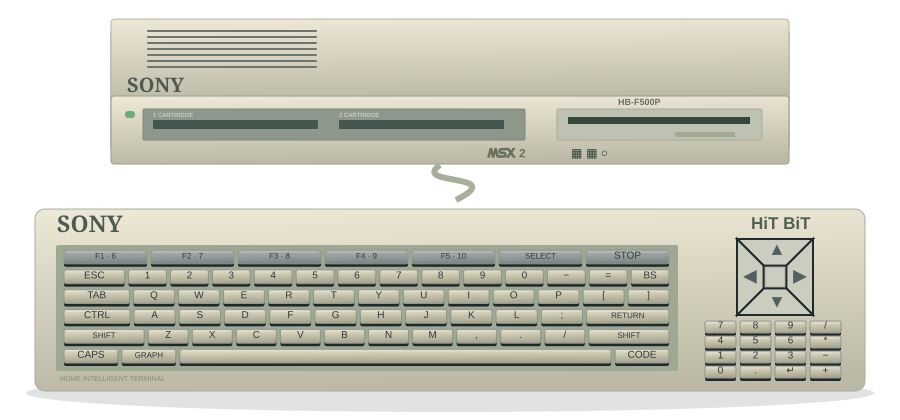
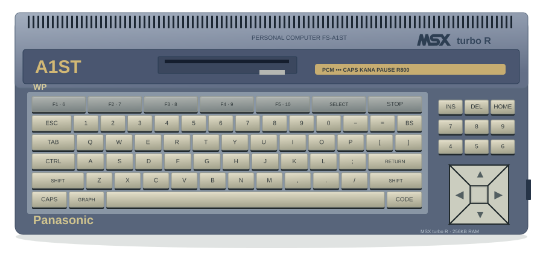
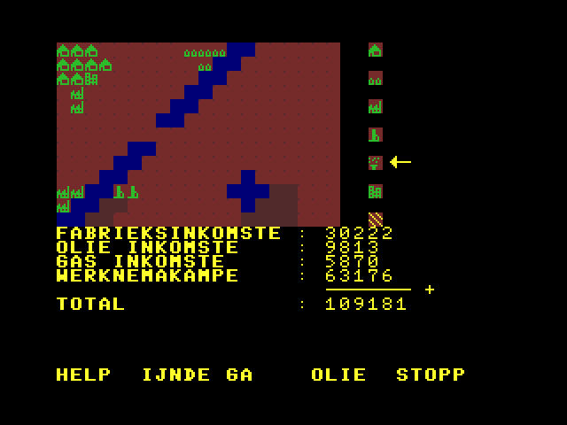
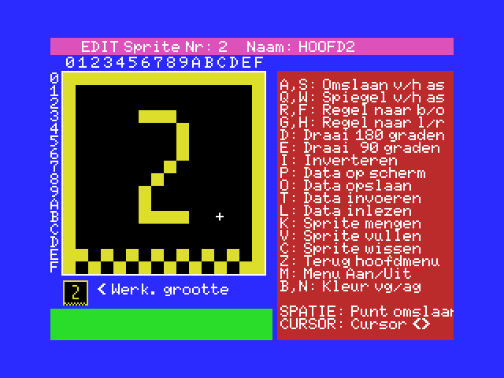
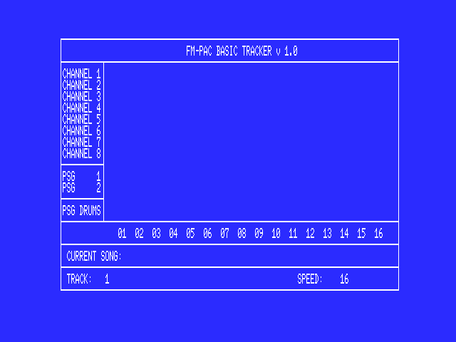
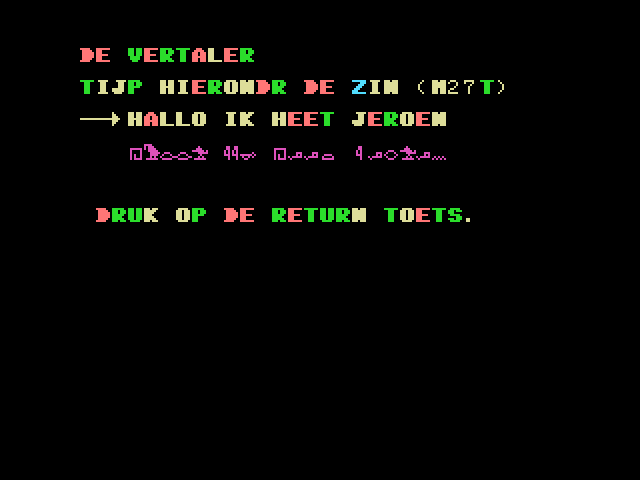
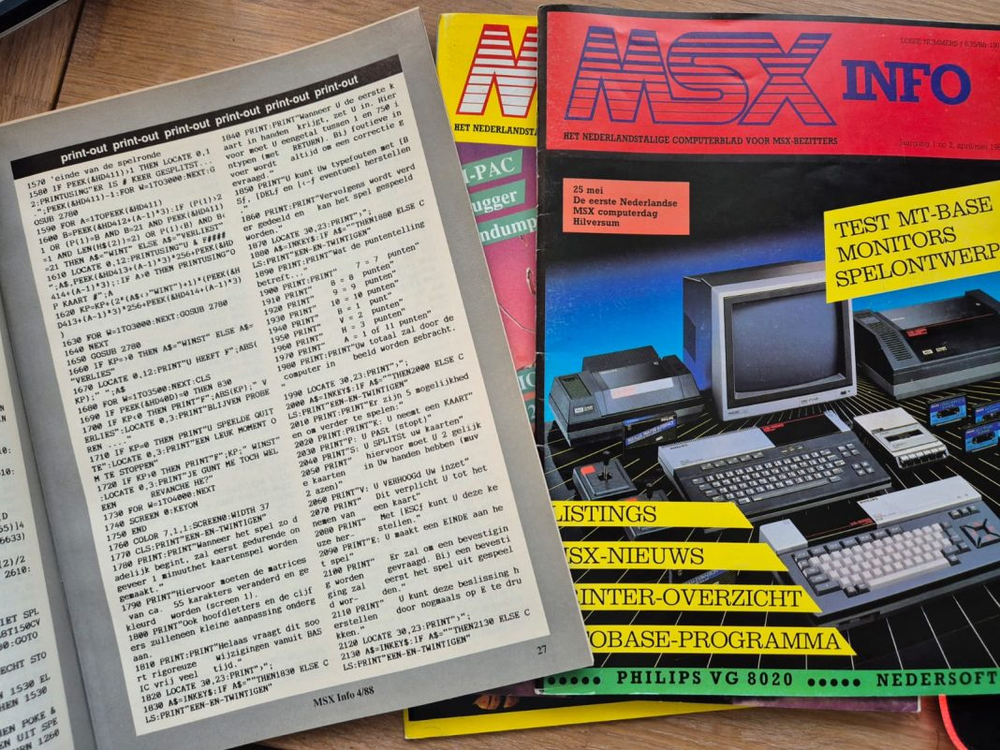

VAN SPELEN NAAR ZELF MAKEN
Het begon
met een cursor.
Een computer aanzetten en meteen kunnen programmeren. Dat was de uitnodiging van MSX-BASIC. Ontdek de gezamenlijke computerstandaard en de programmeertaal achter mijn games.
Probeer zelf een listing
01 / DE MSX-STANDAARD
Veel merken.
Een gezamenlijke basis.
MSX is een familie van compatibele homecomputers. Philips, Sony en Panasonic maakten hun eigen modellen volgens dezelfde afspraken.
In 1983 introduceerden ASCII en Microsoft samen met elektronicafabrikanten de MSX-standaard. Het idee: software en uitbreidingen moesten op computers van verschillende merken kunnen werken. MSX was daarmee een platform waarop meerdere fabrikanten konden voortbouwen.
Een gedeelde hardwarebasis, BIOS-routines en MSX-BASIC maakten dat mogelijk. Fabrikanten konden tegelijk verschillen in behuizing, toetsenbord, geheugen, ingebouwde diskdrive en extra functies. Het MSX-logo gaf de gezamenlijke basis aan; het modelnummer vertelde welk apparaat je voor je had.
Achtergrond: Wat is MSX? en het ontstaan van de standaard.
Vier generaties, stap voor stap
| Generatie | Vanaf | Wat veranderde er? | MSX-BASIC |
|---|---|---|---|
| MSX (MSX1) ↗ | 1983 | De basis: een Z80-processor, kleurenbeeld, sprites en PSG-geluid. Programma’s konden op cassette of cartridge staan. | 1.x |
| MSX2 ↗ | 1985 | De V9938-videoprocessor bracht meer grafische mogelijkheden, waaronder hogere resoluties en een groter kleurenpalet. | 2.x |
| MSX2+ ↗ | 1988 | De V9958 voegde onder meer nieuwe kleurmodi en horizontaal scrollen via de videochip toe. | 3.x |
| MSX turbo R ↗ | 1990 | Naast de Z80 kwam de snellere R800-processor. Panasonic bracht de FS-A1ST en FS-A1GT uit. | 4.x |
Introductiejaren: MSX FAQ. Details per generatie: de links in de tabel. BASIC-versies: MSX-BASIC-overzicht.
Past ieder spel op iedere MSX?
Veel oudere software werkt ook op een nieuwere generatie. Andersom heeft een MSX1 niet de extra mogelijkheden die een MSX2-spel kan vereisen. Kijk daarom naar de benodigde generatie, het geheugen en eventuele uitbreidingen.
Ook de regio telt mee: Europese modellen gebruiken vaak PAL met 50 Hz, Japanse modellen NTSC met 60 Hz. Dat kan invloed hebben op de timing en snelheid van een spel. Compatibiliteit betekent dus niet dat elke combinatie precies hetzelfde resultaat geeft.
Meer over generaties en compatibiliteit ↗Welke computers zie je hier?
- Philips VG-8020
- MSX1 · Mijn eerste MSX
- Philips VG-8235
- MSX2 · Mijn tweede MSX
- Sony HB-F500P
- MSX2 · Bowie’s MSX
- Panasonic FS-A1ST
- MSX turbo R · Nu op mijn bureau
De speelkamer toont vier modellen die bij mijn eigen MSX-verhaal horen. De illustraties volgen de vorm en indeling van de originele computers; WebMSX gebruikt passende generieke profielen met aangepast geheugen. De VG-8020 laadt hier via een virtuele externe diskdrive.
Kies je computer in de speelkamer ↗



Welke games werken op de VG-8020?
De MSX1-selectie bevat 21 games. De originele bestanden zijn gecontroleerd op gebruikte BASIC-opdrachten en gestart in openMSX op een Philips VG-8020 met 64 kB RAM en een externe Philips VY-0010-diskdrive. Dit is een controle van het opstarten en de eerste schermen, geen volledige doorspeeltest.
Amazing Joe gebruikt de MSX2-kleurenpaletfuncties. The A-Team, Chinese Gup, Magical Ball en Zwemmen gebruiken SCREEN 5 voor hun titel- of spelscherm. Deze vijf zijn daarom alleen beschikbaar vanaf MSX2.
Trons 1 geeft in de oorspronkelijke PLAY-muziekroutine een fout op regel 790, ook in de MSX2-controle. Dat is geen specifieke MSX2-eis. Het spel blijft in de volledige collectie als origineel beschikbaar, met een melding, en is uit de MSX1-selectie gelaten. De BASIC-bestanden zijn ongewijzigd.
02 / DE KRACHT VAN BASIC
Je fantasie was
het vertrekpunt.
Gebaseerd op mijn artikel uit 2019.
Lees het oorspronkelijke verhaal ↗In 1990 kreeg ik als tienjarige een MSX. De computer startte op in BASIC: je kon direct opdrachten invoeren, iets veranderen en het resultaat zien. Met bibliotheekboeken en listings uit computerbladen leerde ik programmeren.
MSX-BASIC, ontwikkeld door Microsoft, heeft opdrachten voor beeld, sprites, geluid en invoer. Daardoor kun je met relatief weinig code al iets maken dat beweegt of muziek speelt. PRINT zet tekst op het scherm; PLAY maakt van een reeks noten een melodie.
Die toegankelijkheid maakte experimenteren aantrekkelijk. De beperkingen kwamen ook snel in beeld: BASIC wordt geïnterpreteerd en programma’s moeten passen in het beschikbare geheugen. Grotere of snellere projecten vragen om andere oplossingen, zoals machinecode.
Persoonlijke herinneringen: De kracht van MSX-Basic. Technische achtergrond: MSX Wiki.
03 / UIT MIJN DISKETTEDOOS
Meer dan alleen spelletjes.
Op mijn oude diskettes vond ik ook een sprite-editor, muzieksoftware en een hiërogliefenvertaler terug. Vier voorbeelden van wat je met BASIC kon maken.




Originele screenshots uit De kracht van MSX-Basic. Klik op een beeld om het los te bekijken.

04 / LEREN UIT BLADEN
Eerst overtypen.
Dan begrijpen.
In de jaren negentig haalde ik mijn kennis uit boeken en computerbladen. MSX-INFO en MSX Computer Magazine brachten nieuwe software, hardware, tips en contact met andere hobbyisten binnen bereik.
Een listing was een volledig afgedrukt programma. Je typte elke regel over, zocht de tikfouten op en hoopte dat op jouw scherm hetzelfde verscheen als op het plaatje in het blad. Door te veranderen en opnieuw te proberen, werd zo’n listing ook een programmeerles.
In 2025 kreeg ik weer originele exemplaren in handen. Het bracht de herinnering terug aan die avonden achter de MSX, en aan de Japanse computers waarover ik toen alleen kon dromen. Ook mijn Jer Musix Disk en Moonsound Music Collection kregen ooit een vermelding in MCCM.
Lees ‘Terug naar de MSX tijdschriften’ ↗Zelf bladeren? Open het MCM/MCCM-archief ↗05 / JE EERSTE LISTING
Zes regels. En het werkt.
Een nieuw voorbeeld voor deze site, in de geest van de oude listings. Start het hieronder in een echte MSX-emulator, of download het om zelf te veranderen.
10 SCREEN 0:WIDTH 40:CLS
20 PRINT "HALLO, MSX!"
30 FOR I=1 TO 5
40 PRINT "DIT IS REGEL";I
50 NEXT I
60 PLAY "T150O4L8CDEFG"Je eigen programma
begint hier_
Wat doet elke regel?
- 10 / Een schoon scherm
SCREEN 0kiest de tekstmodus,WIDTH 40zet de breedte op 40 tekens enCLSwist het scherm. De dubbele punt scheidt opdrachten op dezelfde regel.- 20 / Je eerste boodschap
PRINTtoont de tekst tussen aanhalingstekens.- 30–50 / Vijf keer hetzelfde
FOR…NEXTherhaalt regel 40. De variabeleIloopt van 1 tot en met 5; de puntkomma plakt het nummer achter de tekst.- 60 / Een melodietje
PLAYspeelt C, D, E, F en G.T150stelt het tempo in,O4het octaaf enL8de nootlengte.
Wil je verder? Klik na afloop in het emulatorscherm en typ LIST gevolgd door Enter. Typ bijvoorbeeld 20 PRINT "MIJN EIGEN TEKST" en daarna RUN. Zo pas je de listing zelf aan.
De demo start in MSX-BASIC 2.0. Soms is een extra klik in het scherm nodig voor geluid en toetsenbordbediening. Bewaar je wijzigingen zelf; ze verdwijnen bij sluiten of opnieuw starten.
Een paar opdrachten om mee te beginnen
| Opdracht | Waarvoor gebruik je hem? | Voorbeeld |
|---|---|---|
PRINT | Tekst of een uitkomst tonen. | PRINT 2+3 |
LIST / RUN | Het programma bekijken of starten. | LIST, daarna RUN |
FOR…NEXT | Een stukje programma herhalen. | FOR I=1 TO 5:PRINT I:NEXT I |
SCREEN / LINE | Een beeldmodus kiezen en een lijn tekenen. | SCREEN 2:LINE (0,0)-(100,100),15 |
PLAY | Noten spelen met Music Macro Language. | PLAY "CDEFG" |
GOTO | Doorgaan op een ander regelnummer. | GOTO 20 |
Opdrachten en syntaxis: MSX Wiki: instructies en PLAY / Music Macro Language. Grafische opdrachten werken in de daarvoor geschikte beeldmodus.
06 / VERDER ONTDEKKEN
Leg iets naast je toetsenbord.
Naslagwerk bij een opdracht, een oude listing om over te typen of hulp van andere liefhebbers: hier kun je verder.
MSX FAQ — de standaard en de computers
Meer over de generaties, hardware, uitbreidingen en verschillen tussen MSX-systemen.
STANDAARD & HARDWARE · ENGELSMSX Wiki — de taal en de versies
Overzicht van MSX-BASIC, de verschillende generaties en verwijzingen naar documentatie.
ACHTERGROND · ENGELSHet MSX-BASIC-opdrachtenboek
Zoek opdrachten op per onderwerp: tekenen, geluid, invoer, lussen en meer. Handig bij het aanpassen van een listing.
NASLAGWERK · ENGELSMSX Computer Magazine & MCCM
Blader door het digitale archief met oude nummers, listingboeken en verzameldisks.
TIJDSCHRIFTENARCHIEF · NEDERLANDSMSX Resource Center — het forum
Lees mee met de MSX-gemeenschap of zoek eerdere discussies over programmeren en hardware.
COMMUNITY · MEERTALIGWebMSX — de emulator achter deze site
Broncode en documentatie van de emulator waarmee de games en deze BASIC-demo in je browser draaien.
EMULATIE · ENGELSGENOEG GELEZEN?